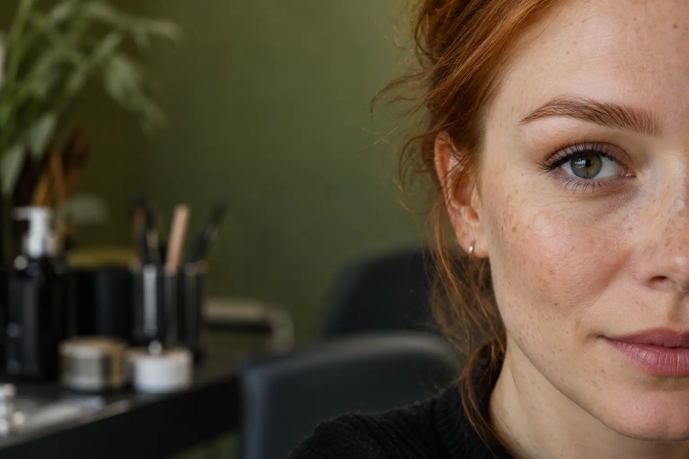

Antakių korekcija ar dažymas: kuo skiriasi rezultatas?
Autorius: Madbeauty redakcija · Numatyta 2026 m. gruodžio 1 d. 10:00 (Lietuvos laiku)
Likusi patikra prieš publikavimą
- Plane aiškiai numatyta patikra dar neatlikta: „Meniu ir specialisto patikra“. Reikia tikros nurodytos srities peržiūros; bendrų šaltinių skaitymas ir agento redakcinė peržiūra jos nepakeičia.
Korekcija keičia antakių formą, dažymas – jų atspalvį. Sužinokite, kaip pasirinkti pagal norimą rezultatą ir ką patikrinti bendrame pasiūlyme.

Trumpai: antakių korekcija skirta formai sutvarkyti, o dažymas – atspalviui paryškinti. Jei norite abiejų pokyčių, ieškokite pasiūlymo, kuriame aiškiai nurodyti abu darbai. Vien paslaugos pavadinimas ne visada atskleidžia tikslų metodą ar tai, kas įskaičiuota.
Ką keičia korekcija, o ką – dažymas?
- Korekcija: pagrindinis tikslas – sutvarkyti antakių kontūrą. Pasiūlymo pavadinimas pats savaime nepasako, kokiu būdu tai bus atliekama ar kokia darbų apimtis.
- Dažymas: pagrindinis tikslas – pakeisti arba paryškinti antakių atspalvį. Dažymas savaime nereiškia, kad bus atlikta ir formos korekcija.
- Korekcija su dažymu: derinamos dvi užduotys – forma ir spalva. Prieš rinkdamiesi patikrinkite, ar abi aiškiai įtrauktos į paslaugos aprašą.
Jei labiausiai rūpi kontūras, pradėkite nuo korekcijos aprašymo. Jei norite ryškesnio atspalvio, ieškokite dažymo. Jei svarbūs abu dalykai, vertinkite bendrą pasiūlymą pagal jo sudėtį, o ne vien pagal pavadinimą. Antakių laminavimas yra atskirai įvardijama paslauga; nelaikykite jo dažymo sinonimu.
Ką parodo vienas paslaugų meniu?
2026 m. spalio 9 d. peržiūrėtame vieno teikėjo meniu korekcija be dažymo nurodyta kaip 30 min. paslauga už 10 €, korekcija su dažymu – 40 min. už 17 €, o laminavimas kartu su dažymu ir korekcija – 60 min. už 25 €. Tai konkretaus teikėjo datuotas pavyzdys, o ne rinkos vidurkis ar Madbeauty paslaugų pasiūla. Jis padeda pastebėti, kad tie patys darbai gali būti išskaidyti į atskiras paslaugas arba sujungti į paketą. Peržiūrėtas paslaugų meniu.
Kaip palyginti pasiūlymus?
- Palyginkite darbų sudėtį: ar įtrauktas tik dažymas, tik korekcija, ar abu darbai?
- Atskirkite norimą rezultatą: formos pokytį, atspalvio pokytį ar abu. Taip lengviau pastebėti, jei paslaugos pavadinimas ir aprašymas žada skirtingą apimtį.
- Patikrinkite nurodytą trukmę ir kainą konkrečiame meniu. Datuotas vieno teikėjo pavyzdys nepatvirtina kitų teikėjų ar miestų kainų.
- Jei domina ir laminavimas, patikrinkite, ar jis įtrauktas į paketą. Jo nereikėtų automatiškai laikyti korekcijos ar dažymo dalimi.
Rinkitės pagal tai, ką norite pakeisti, ir patvirtinkite, kokie darbai įeina į konkrečią paslaugą. Taip aiškiau palyginsite pasiūlymus ir išvengsite prielaidos, kad korekcija, dažymas ir laminavimas reiškia tą patį.
Palyginkite procedūrų aprašus kataloge: Korekcija ir Dažymas. Konkrečią darbų apimtį, kainą ir prieinamumą tikrinkite prie realaus teikėjo pasiūlymo.
Planuojamos vidinės nuorodos
Šaltiniai peržiūrai
- Laminuota Brows&Lashes · komponentai — 2026-10-09 Laminuota: blakstienų laminavimas – 50 min., 30 Eur; dažymas – 20 min., 10 Eur. Antakių korekcija – 30 min., 10 Eur; su dažymu – 40 min., 17 Eur; laminavimas su dažymu ir korekcija – 60 min., 25 Eur. Kojų depiliacija vašku: blauzdos – 30 min., 25 Eur; šlaunys – 30 min., 30 Eur; visos kojos – 60 min., 40 Eur. Konkretaus meniu pavyzdžiai, ne Lietuvos vidurkis.
- Leila · laminavimo ir priauginimo variantai — 2026-10-09 Leila: blakstienų laminavimas su „botox“ ir dažymu – 70 min., 40 Eur; naujas classic/nude LED/UV priauginimas – 120 min., 45 Eur; korekcija – 95 min., 35 Eur. Antakių laminavimas su korekcija be dažymo – 50 min., 32 Eur; su dažymu – 55 min., 35 Eur. Antakių ir blakstienų pasiūlymai atskiri. Meniu žyma „botox“ nepatvirtina medicininės injekcijos, LED/UV – saugumo.
- MILONA · antakiai ir blakstienos Kaune — 2026-10-09 meniu: antakių korekcija+dažymas 40 min/20 EUR, su blakstienų dažymu 50 min/26 EUR. Blakstienų/antakių laminavimo ir priauginimo deriniai rezervuoja kitą laiką. Vieno teikėjo pavyzdys, ne ekspertinė peržiūra ar vidurkis.